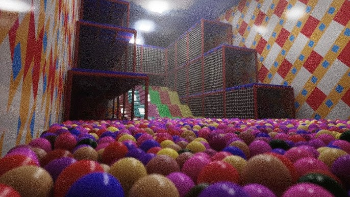

Laatste Nieuws
16 juni 2026

Nieuws: voorbeeld
Dit is een voorbeeld van een nieuwsbericht voor ons schoolproject. Hier kunnen we later acties, nieuwe gerechten of evenementen van De Smulaap plaatsen!
Ons Team
Maak kennis met de enthousiaste toppers die elke dag zorgen voor de lekkerste gerechten en de gezelligste sfeer in het restaurant!
Chef-kok
Verantwoordelijk voor de keuken, de inkoop en het bereiden van de burgers en spareribs.
Bediening
Het vriendelijke gezicht van het restaurant. Heet de gasten welkom en brengt het eten rond.
Keukenhulp & Afwas
Zorgt ervoor dat de keuken brandschoon blijft en helpt de kok met het bakken van de poffertjes.